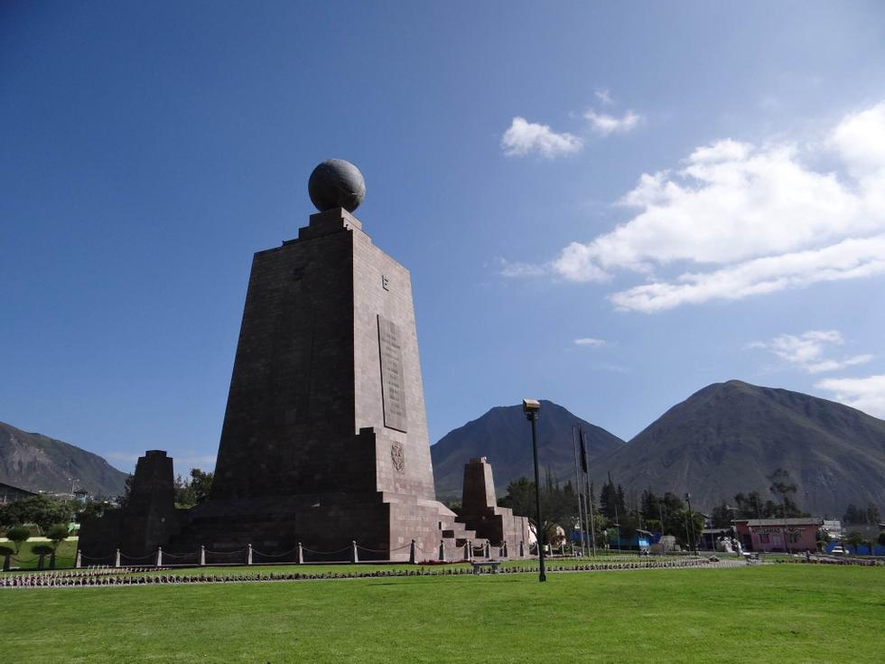
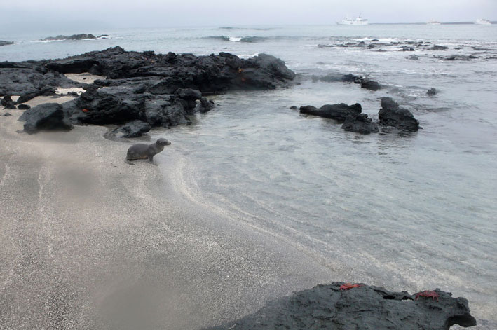
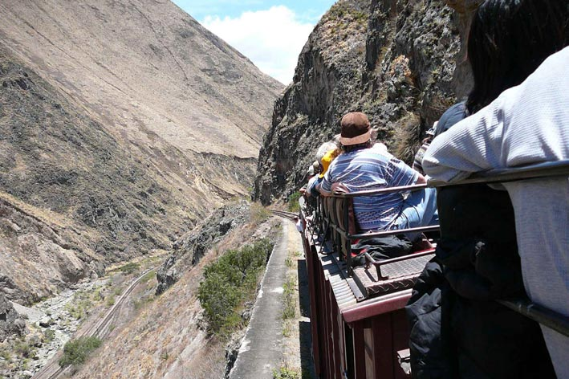
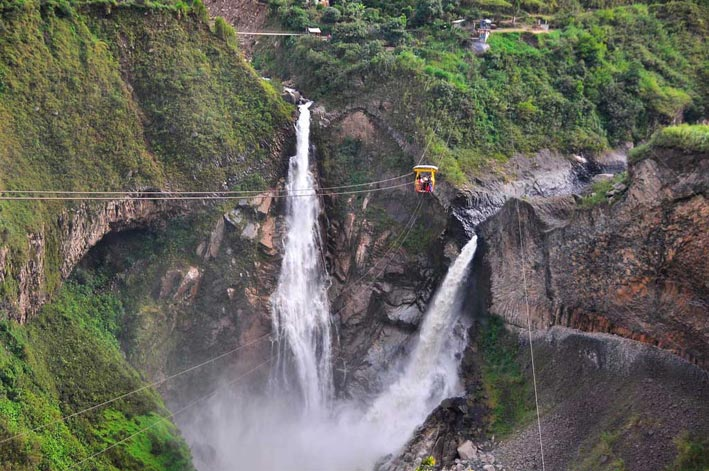
 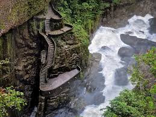
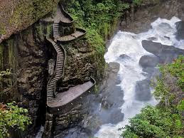

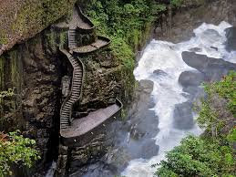
 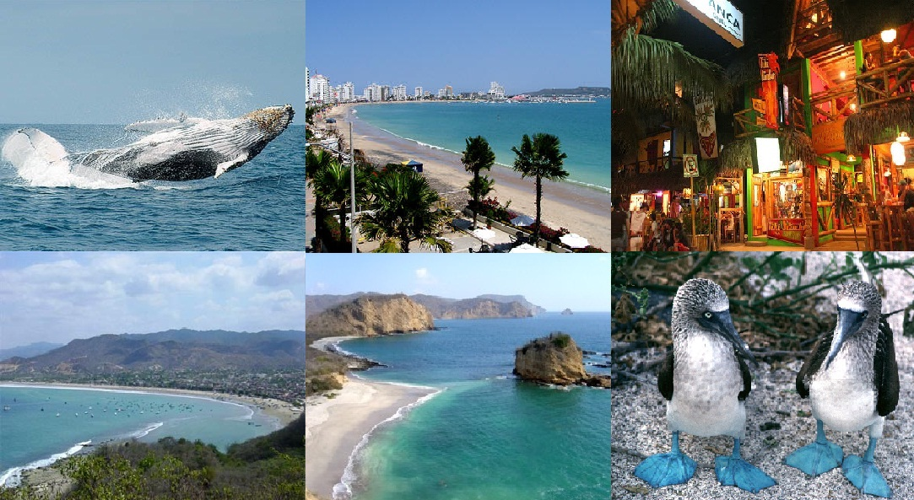
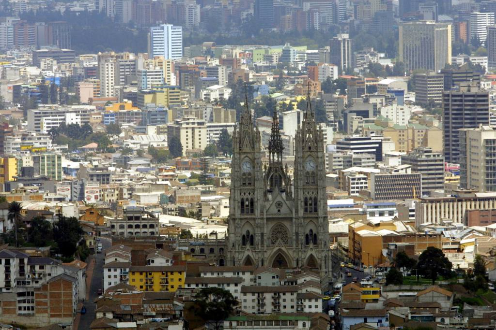
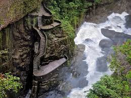
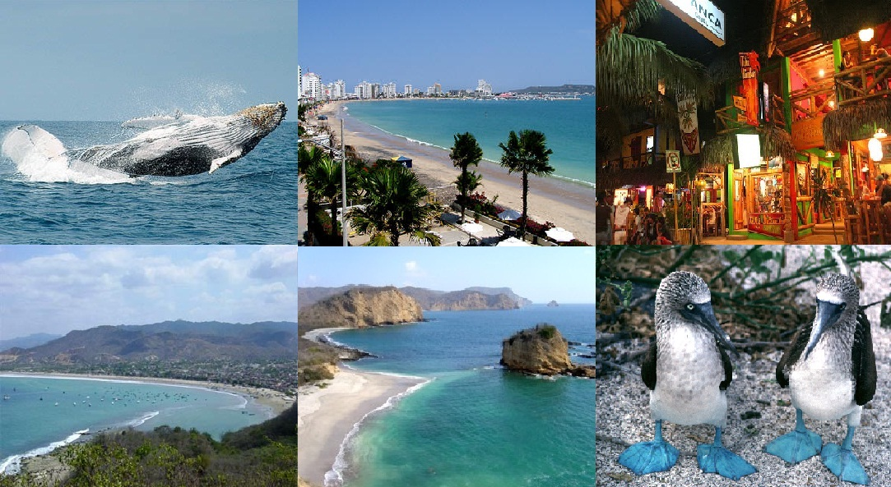
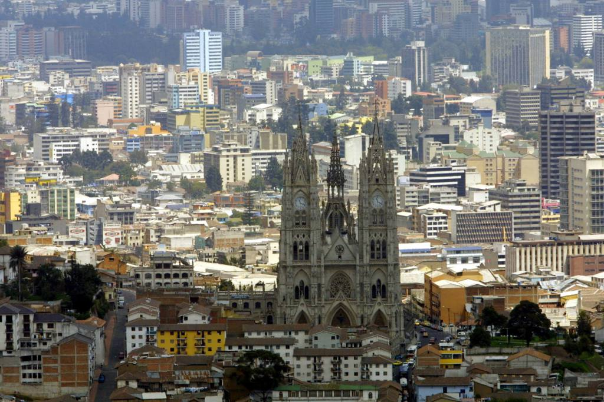
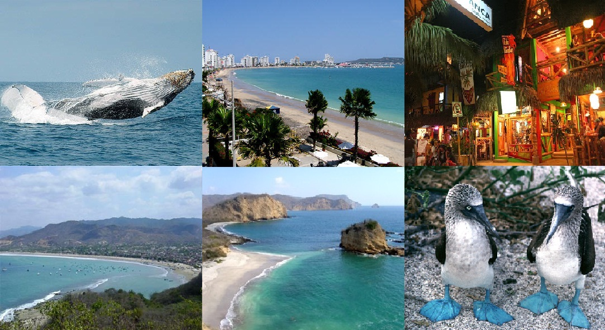
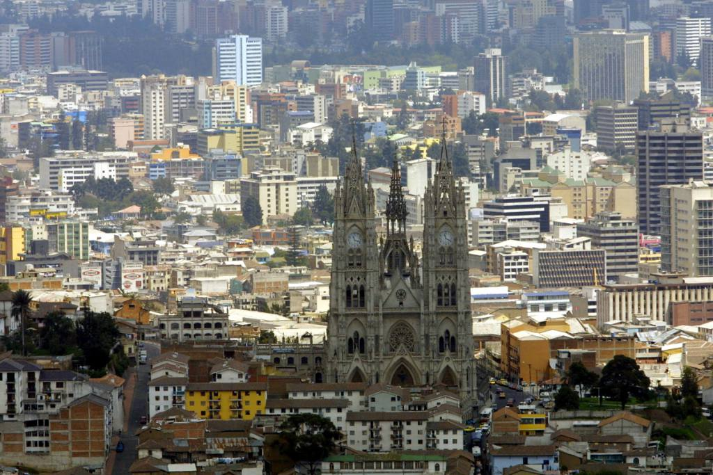
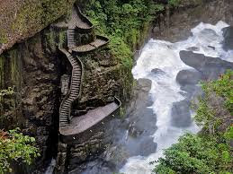
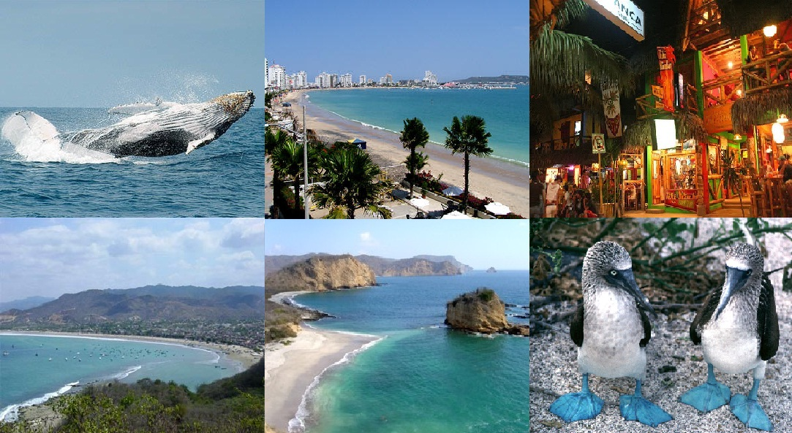
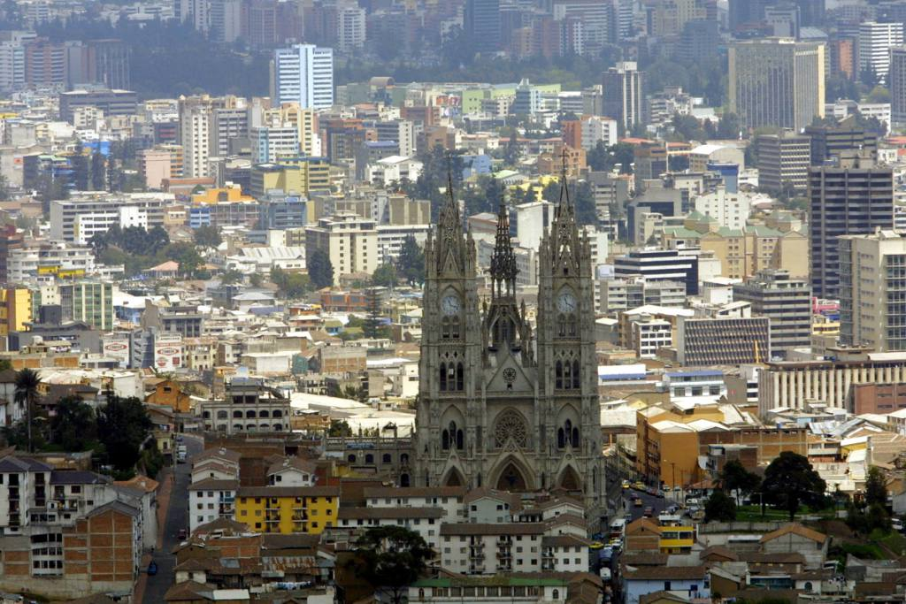
Está localizado en un valle, del cual unas 19,000 hectáreas están protegidas en lo que se denomina el Bosque Protector Mindo Nambillo, ecosistema en el cual habitan unas 500 variedades de aves y 90 especies de mariposas. Igualmente en el parque de reserva de Mindo se han identificado más de 170 especies de orquídeas y abundan bromelias, heliconias, helechos, vides, musgos y líquenes. A pesar de ser pequeño en extensión, Mindo alberga unas 500 variedades de pájaros y aproximadamente 90 tipos de mariposas. Además se han encontrado más de 170 especies de orquídeas. Se puede disfrutar de paisajes como el bosque nublado y las ruinas de Tulipe, siguiendo la Eco Ruta del Quinde. También las cascadas de Nambillo es un lugar que no se puede perder.
Además de ser ideal para practicar el avistamiento de aves, también hay espacios ideales para deportes de aventura como montañismo, equitación, ciclismo de montaña, descenso de aguas bravas y rafting.
14 de marzo de 2019date_range
80km al noroeste de Quitolocation_on
Cuenca, oficialmente Santa Ana de los Cuatro Ríos de Cuenca, es una ciudad ecuatoriana, cabecera del cantón Cuenca y capital de la provincia de Azuay, así como su urbe más grande y poblada. Se encuentra atravesada por los ríos Tomebamba, Tarqui, Yanuncay y Machángara, al centro-sur de la región interandina de Ecuador, en la hoya del río Paute, a una altitud de 2550 metros sobre el nivel del mar y con un clima andino de 15 grados Celsius en promedio.Es llamada "Atenas de Ecuador" por su arquitectura, su diversidad cultural, su aporte a las artes, ciencias y letras ecuatorianas, y por ser el lugar de nacimiento de muchos personajes ilustres de la sociedad ecuatoriana.7 En el censo de 2010 tenía una población de 329 928 habitantes, que la convierte en la tercera ciudad más poblada del país detrás de Guayaquil y Quito. La ciudad es el núcleo del área metropolitana de Cuenca, constituida, además, por ciudades y parroquias rurales cercanas. El conglomerado alberga a 661 685 habitantes, y ocupa la tercera posición entre las conurbaciones de Ecuador.
La ciudad lleva el nombre de Santa Ana de los Ríos de Cuenca en honor a la ciudad de Cuenca en España, lugar de nacimiento del virrey español del Perú Andrés Hurtado de Mendoza, quien fue el que mandó a fundar la ciudad al español Gil Ramírez Dávalos y al hecho de que, este lugar, en sus accidentes geográficos se parecen mucho a la ciudad española. Además, el nombre incluye el hecho de que la cruzan cuatro ríos: Tomebamba, Tarqui, Yanuncay y Machángara. El resto del nombre proviene de la tradición española de dedicar a las nuevas ciudades a un santo o santa de la iglesia católica, en este caso a Santa Ana.
Amante de los lugares mas exóticos, llenos de naturaleza y especies de animales y plantas. Me encanta Ecuador por su fauna y flora variada porque en un solo país encontramos 4 mundos diferentes, Costa, Sierra, Amazonía y las encantadoras Islas Galápagos. Me declaro amante también de las bellezas costeras playas encantadas y hermosas, de la sierra y la hospitalidad de su gente, y la maravillosa naturaleza que se encuentra en la Amazonía Ecuatoriana. viviría cada día recorriendo los maravillosos rincones que nuestro lindo Ecuador ofrece,..... All You Need Is Ecuador